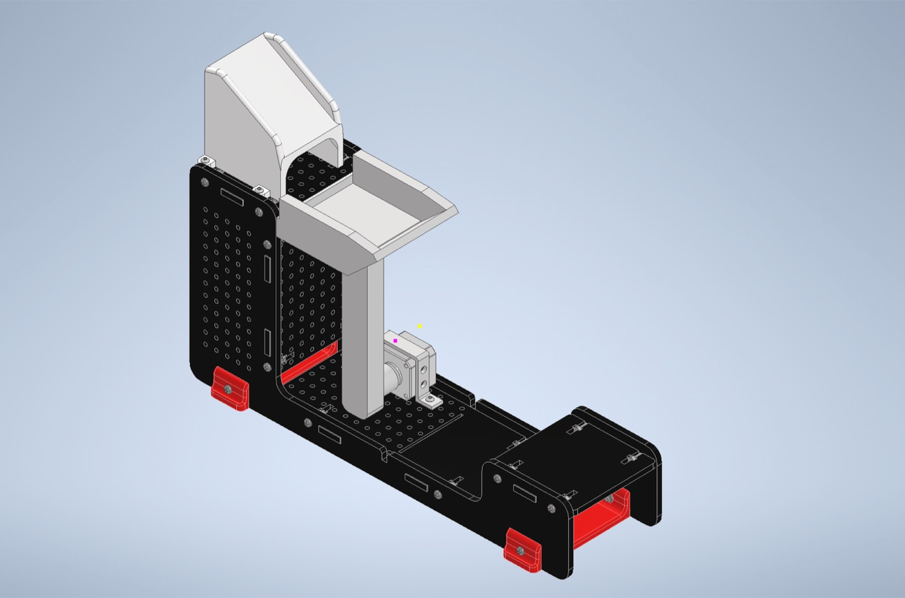
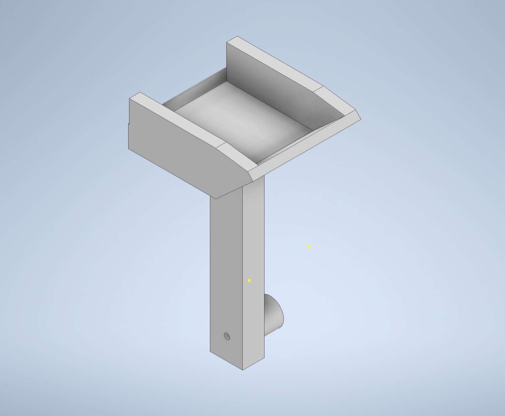
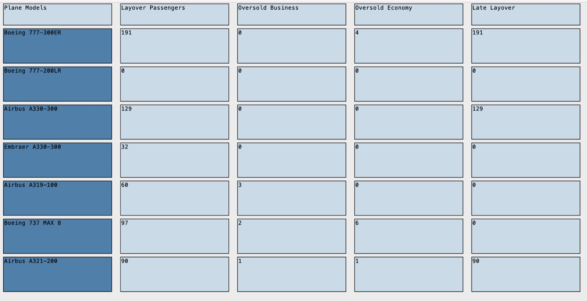

Building a baggage-transfer mechanism for an international airport
My first cornerstone design project: a lever-arm luggage transfer built in Autodesk Inventor, one stubborn retraction bug solved with a piece of string, and a Python GUI for the flight data.
The problem
As air travel keeps growing, baggage handling has become a real bottleneck for airlines everywhere. This project targeted luggage handling systems across airports — how to move bags faster and more efficiently for porters.
The goal: design a lightweight, durable bridging mechanism plus a computer program that together optimize energy efficiency, cost, and time during luggage transport between platforms.
“A world with a sudden limit on air travel would be tremendously different from the one we live in now.” — Charles Mann

Our design
We started with a rotary actuator, a Q-arm, and a 3D-printed slope that the luggage sat on before being transferred to platform B. Our solution was a rotatable lever arm with a transferring box, positioned right under the slide on platform A and attached directly to the rotary actuator — using it as a pivot to swing the luggage across.


I designed the initial Inventor model, which the team then refined after it was chosen as our solution. I kept the modifications in line with our standard of simplicity and effectiveness by building the whole mechanism from just two solid parts — the transfer box and the lever arm.
The retract problem
During testing the lever arm couldn't retract from platform B — the weight of the box fought the rotary actuator on the way back. I solved it by attaching a string from the mechanism to platform A, which stopped the arm from dropping too far below platform B so it could swing back up.
To find the point where it would reliably retract, I recorded the distance between the mechanism and the platform across nine tests:
▶ Full observation table data
| Test | Distance (cm) | Result |
|---|---|---|
| 1 | 0 | No — the mechanism did not retract |
| 2 | 2 | No — the mechanism did not retract |
| 3 | 4 | No — the mechanism did not retract |
| 4 | 6 | No — the mechanism did not retract |
| 5 | 8 | No, but closer to retracting |
| 6 | 10 | No, but closer to retracting |
| 7 | 12 | No, but closer to retracting |
| 8 | 14 | Almost |
| 9 | 16 | Yes — the mechanism retracted |
The passenger GUI
Beyond the mechanism, I significantly improved the team's flight-data code by bringing in my own Python knowledge of the GUI toolkit (Tkinter). Using text frames and labels made the code more efficient and gave the flight data a professional, organized display.

▶ Full flight data (GUI) data
| Plane model | Layover passengers | Oversold business | Oversold economy | Late layover |
|---|---|---|---|---|
| Boeing 777-300ER | 191 | 0 | 4 | 191 |
| Boeing 777-200LR | 0 | 0 | 0 | 0 |
| Airbus A330-300 | 129 | 0 | 0 | 129 |
| Embraer A330-300 | 32 | 0 | 0 | 0 |
| Airbus A319-100 | 60 | 3 | 0 | 0 |
| Boeing 737 MAX 8 | 97 | 2 | 6 | 0 |
| Airbus A321-200 | 90 | 1 | 1 | 90 |
Collaborating with my team
As the project administrator I kept the team cohesive — planning weekly meetings where we assigned new responsibilities and worked through problems as they came up. We resolved the team code together by fixing errors in the passenger data, and kept iterating on AutoCAD prototypes, tuning the fit against the pin on the rotary actuator and the platform.
Reflection & feedback
▶ Final reflection learning
Looking back, most of the challenges came down to the weight of the mechanism and the environment code. The project drilled in the value of managing time well and taking an iterative approach — constantly testing the whole mechanism and the Q-arm code so I could plan real solutions to problems as they surfaced. I grew most in Autodesk Inventor, experimenting with new tools and features to modify the mechanism and improve efficiency.
Some of the questions I kept coming back to:
- How could the mechanism be redesigned to add complexity and overall stability, rather than optimizing for simplicity?
- Could laser cutting reduce the weight of the lever arm and transfer box with a more effective material?
- Would a linear actuator glide the mechanism back more effectively than the rotary actuator?
▶ Summary takeaway
This project taught me skills I'll carry into future work. The airport transfer mechanism succeeded thanks to a sturdy material, frequent testing, and steady improvements along the way — like reducing the weight and size of the lever arm. With further refinement, a design like this could make travel more efficient while staying innovative and sustainable.
▶ What my teammate said peer feedback
“Erika, as the administrator of this project, was extremely helpful in the way she helped the team ensure everything was handed in, inside and outside Design Studio meetings. She was very easy to get along with and agreed with most of the group's input, minimizing conflict. In particular, her work with the final project design was excellent — she successfully came up with a simple, yet effective mechanism.”
— Project 1 teammate
References
- C. Mann, “Charles C. Mann Quotes,” BrainyQuote. Accessed Jan. 5, 2025.
Design Project 1 · ENG 1P13 Integrated Cornerstone Design, McMaster University · Fall 2024.